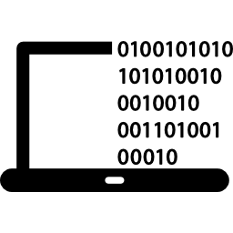
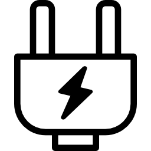
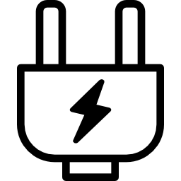

 

Siamo gli studenti della classe 5A specializzazione informatica dell’Istituto Tecnico Tecnologico “M. Buonarroti – Pozzo”.
Su proposta dei nostri professori di informatica, abbiamo iniziato questo progetto a metà febbraio 2017.
Il suo scopo è quello di creare e mettere a disposizione di tutti, entro la fine dell’anno scolastico 2016/2017, un sito web che mette a disposizione dei video didattici, riguardanti in primis le materie informatiche, utili per esempio ai futuri studenti che possiedono dubbi o carenze.
Dopo aver assistito ad una breve presentazione del progetto, ci siamo divisi in due gruppi: uno specializzato alla produzione dei video e quindi alla parte didattica del progetto mentre l’altro focalizzato alla creazione del sito e alla gestione del database.
In particolare: il “Gruppo Video” si occupa della scelta degli argomenti, dello sviluppo delle video lezioni e della produzione dei video che saranno poi inviati al “Gruppo Sito Web – Database” che si occupa appunto di creare e aggiornare il sito web, di gestire il database e di tutto quello che riguarda la programmazione.
Su proposta dei nostri professori di informatica, abbiamo iniziato questo progetto a metà febbraio 2017.
Il suo scopo è quello di creare e mettere a disposizione di tutti, entro la fine dell’anno scolastico 2016/2017, un sito web che mette a disposizione dei video didattici, riguardanti in primis le materie informatiche, utili per esempio ai futuri studenti che possiedono dubbi o carenze.
Dopo aver assistito ad una breve presentazione del progetto, ci siamo divisi in due gruppi: uno specializzato alla produzione dei video e quindi alla parte didattica del progetto mentre l’altro focalizzato alla creazione del sito e alla gestione del database.
In particolare: il “Gruppo Video” si occupa della scelta degli argomenti, dello sviluppo delle video lezioni e della produzione dei video che saranno poi inviati al “Gruppo Sito Web – Database” che si occupa appunto di creare e aggiornare il sito web, di gestire il database e di tutto quello che riguarda la programmazione.